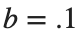
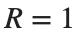
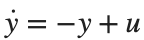
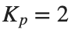
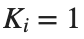
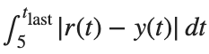

PID Control
실행 조건
MATLAB · Control System Toolbox
학습 목표
빠른 응답만 보고 Gain을 고르면 Overshoot나 모델 변화에 취약할 수 있습니다. 서로 다른 성능 지표를 비교합니다.
P·PI·PID 기준 비교
시작 조건
Motor는  ,
, . P=(500,0,0), PI=(500,300,0), PID=(500,300,30)입니다.
. P=(500,0,0), PI=(500,300,0), PID=(500,300,30)입니다.

,,
,진행 방법
- 음의 단위 Feedback으로 세 Closed-loop 모델을 만드세요.
- s의 Unit Step을 같은 그림에 표시하고 Pole을 먼저 확인하세요.
- 안정한 모델에 대해 Overshoot·Settling Time·Steady-State Error를 기록하세요.
남길 결과
- 제어기 3행의 표와 응답 그림, 역할 비교 짧은 설명.
s=tf('s'); G=.01/((.01*s+.1)*(.5*s+1)+.01^2);
configs=[500 0 0;500 300 0;500 300 30]; names={'P','PI','PID'};
for i=1:size(configs,1)
gains=configs(i,:); C=gains(1)+gains(2)/s+gains(3)*s; T=feedback(C*G,1);
disp(names{i}); disp(pole(T));
end
% TODO: 같은 시간축의 응답과 성능 지표를 기록하세요.
결과 기록·자가 점검
제어기 | |
Kp | |
Ki | |
Kd | |
안정 여부 | |
Overshoot [%] | |
Settling Time [s] | |
Steady-State Error |
확인할 점
- 제어기 이외의 Plant·입력·시간축은 같은가?
- 불안정하거나 수렴이 끝나지 않은 경우 지표 대신 사유를 적었는가?
한 항씩 변화시키기
시작 조건
PID 기준 (500,300,30)에서 Kp만 250,500,750으로 바꿉니다. Ki·Kd는 고정합니다.
진행 방법
- 활동 1의 PID 결과를 기준으로 두고 만 250과 750으로 각각 바꾸세요.
 ,
,  , Plant와 시간축은 유지하세요.
, Plant와 시간축은 유지하세요. - 두 설정의 Unit Step을 기준 곡선과 같은 그림에 표시하세요. 같은 stepinfo 설정으로 구한 Overshoot·Settling Time·Steady-State Error를 활동 1과 같은 열로 기록하세요.
- 두 추가 설정 중 하나를 선택하고, 기준값보다 개선하려는 지표와 허용하려는 변화를 표의 값으로 설명하세요.
남길 결과
- 두 설정의 응답 그림과 지표 표. 선택 이유 한 문장.
s=tf('s'); G=.01/((.01*s+.1)*(.5*s+1)+.01^2);
for kp=[250 500 750]
T=feedback((kp+300/s+30*s)*G,1); disp(kp); disp(dcgain(T));
end
% TODO: 안내된 두 Kp 설정의 Time Response와 성능 지표를 비교하세요.
결과 기록·자가 점검
변경 항 | |
값 | |
Overshoot [%] | |
Settling Time [s] | |
Steady-State Error |
확인할 점
- 한 번에 한 Gain만 바꾸었는가?
- 빠르다는 평가를 구체적인 지표로 설명했는가?
입력 한계와 적분 누적
시작 조건
1차 Plant

, 목표 2→.5(5초에 변경), , dt=.01 s입니다.
,
입니다.진행 방법
- 제공된 PI 시뮬레이션에서 실제 입력과 제한 전 입력을 함께 그리세요.
- conditional integration을 켠 경우와 끈 경우를 비교하세요.
- 목표를 낮춘 뒤 오차가 오래 남는 이유를 적분 상태와 연결해 설명하세요.
남길 결과
- 출력·입력·적분 상태의 세 그래프와 비교 표.
비교 표의 IAE는 목표 변경 시각부터 마지막 기록 시각까지의

입니다. 입력 포화 지속 시간은 전체 기록에서 제한된 u가 0 또는 1인 표본 수에 dt를 곱해 구하세요.두 적분 처리 방식에 같은 구간과 계산법을 사용합니다.
figure; hold on
for flag=[false true]
[time,trace]=simulateAntiWindup(flag); plot(time,trace(:,2),'DisplayName',string(flag));
end
xlabel('Time [s]'); ylabel('Output'); legend; grid on
% TODO: 입력·적분 상태와 5초 이후의 지표를 추가하세요.
function [t,rows]=simulateAntiWindup(antiwindup)
t=(0:.01:11.99)'; y=0; integral=0; rows=zeros(numel(t),5);
for n=1:numel(t)
ref=2; if t(n)>=5, ref=.5; end
e=ref-y; raw=2*e+integral; u=min(max(raw,0),1);
if ~antiwindup || (raw>0 && raw<1) || (raw>=1 && e<0) || (raw<=0 && e>0)
integral=integral+e*.01;
end
y=y+(-y+u)*.01; rows(n,:)=[ref y raw u integral];
end
end
결과 기록·자가 점검
적분 처리 | |
목표 변경 후 IAE | |
최대 적분값 | |
입력 포화 지속 시간 [s] |
확인할 점
- 입력 제한을 적용하기 전후 값을 구분했는가?
- PI Gain까지 바꾸지 않고 적분 처리 방식만 비교했는가?